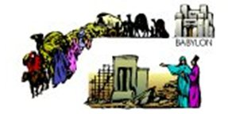

Nhà nước Israel
Xuyên suốt cuốn sách Đệ Nhị Luật, Thiên Chúa đã hướng dẫn chi tiết cho người của Ngài về cách họ phải sống khi họ đến Canaan, vùng đất mà Thiên Chúa đã hứa với Abraham. Những hướng dẫn thậm này chí còn bao gồm kiểu chính quyền mà họ nên tạo dựng. Lúc đầu, họ sẽ được cai trị bởi một loạt các thẩm phán (vì thế, có cuốn sách về Thẩm phán). Sau đó, trong Đệ Nhị Luật 17:14-15, Thiên Chúa nói với người Israel rằng các vị vua cai trị người dân, nhưng chỉ có những vị vua đã được Thiên Chúa lựa chọn đặc biệt (xức dầu).
Mặc dù Saul, vị vua đầu tiên của Israel, được Thiên Chúa chọn, nhưng ông cuối cùng đã không vâng lời và thiếu rất nhiều đức tin. Thiên Chúa đã không tiếp tục sự trị vì Israel thông qua gia đình Saul (con trai của Saul đã không kế vị làm vua).
Như chúng ta đã thấy trong phần giới thiệu của Kinh Thánh trong phần đầu tiên của cuốn cuốn sách này, những cuốn sách khác nhau được gộp lại theo loại hình văn học (thể loại) của các cuốn sách đó. Tám cuốn sách đầu tiên, từ Sáng Thế Ký (Genesis) đến Ruth, liên quan các sự kiện của lịch sử ban đầu trong thứ tự thời gian (thứ tự mà các sự kiện đã xảy ra). Câu chuyện của nhà nước Israel được kể trong nhiều quển sách của Cựu Ước, nhưng không theo thứ tự thời gian. Để làm rõ hơn về những gì đã xảy ra với ai và khi nào, nên tìm một cuốn sách tham khảo cung cấp một thời gian khi sự kiện diễn ra và nơi mà những câu chuyện có thể được tìm thấy trong Cựu Ước. Dưới đây là một bảng rất ngắn gọn về các vị vua đã cai trị Israel và nơi các câu chuyện của họ có thể được tìm thấy trong Cựu Ước:
David
Người sẽ trở thành vị vua kế tiếp, và có lẽ là lớn nhất, của Israel đến từ một nơi gần như không bao giờ xảy ra. David là con trai út (không phải là con trưởng như thường lệ) của một người đàn ông sống trong một thành phố hẻo lánh có tên là Bethlehem. (Nghe có vẻ quen?) Chính là thông dòng dõi (hậu duệ của ông) của David mà Chúa Giêsu sẽ được sinh ra!
Như với tất cả những người trước đó đã được Chúa chọn để giúp Ngài thực hiện ý muốn của Ngài trên thế giới, David không được hoàn hảo. Ông phạm các tội rất nghiêm trọng trong thời gian làm vua. Tuy nhiên, trong I Samuel 13:14, Thiên Chúa nói với nhà tiên tri Samuel rằng David là một người luôn trong trái tim của Thiên Chúa.

Một Quốc gia Bất tuân
Con trai của David, tên là Solomon, kế vị làm vua. Solomon được biết đến là rất uyên bác và khôn ngoan. Ông cũng là vị vua đã dẫn dắt Israel hoàn thành việc xây dựng đền thờ nguy nga mà ban đầu được hình thành bởi cha của ông là David. Solomon được cho là đã viết ít nhất hai cuốn sách Cựu Ước: Bài hát của Solomon (một bài thơ tình!) và Truyền đạo (Ecclesiastes).
Nếu bạn nhớ lại, lệnh đầu tiên và quan trọng nhất của Thiên Chúa dành cho người của Ngài là họ KHÔNG được có các vị thần khác. Thậtkhông may, xng quanh Israel có các bộ tộc và các quốc gia tôn thờ nhiều vị thần và thần tượng. Solomon mang nhiều trong số những người nước ngoài này vào Israel để giúp xây dựng đền thờ; những người lao động đó mang theo thần tượng của họ. Như chúng ta đã biết trong cuộc sống riêng của chúng tôi, thật khó để liên tục ở xung quanh những người không giống chúng ta và có niềm tin khác chúng ta, mà không bắt đầu tin theo một số niềm tin và thực hành của họ, đặc biệt là nếu đức tin của bạn thấp. Đây là những gì đã xảy ra với đất nước Israel.

Thiên Chúa Gửi Cảnh báo Thông qua các Nhà tiên tri
Nhà nước Israel đã được chọn bởi Thiên Chúa làm người dân cả Ngài, nhưng thời gian và một lần nữa, người Do Thái lại chuyển sang thờ các thần tượng của các dân tộc sống xung quanh họ. Thông thường, việc tôn thờ thần tượng này liên quan đến các thực hành như sự hy sinh trẻ sơ sinh và dâm dục mà Thiên Chúa không thể dung thứ đối với những người của Ngài.
Hết lần này đến lần khác, Thiên Chúa đã gửi các nhà tiên tri đến người dân của Ngài Hết lần này đến lần khác, Thiên Chúa đã gửi các nhà tiên tri để cảnh báo họ rằng sẽ có hậu quả nghiêm trọng cho sự bất tuân của họ. Phần cuối cùng của Cựu Ước ghi lại những lời mà Thiên Chúa đã truyền cảm hứng cho các nhà tiên tri của Ngài nói. Mỗi dự đoán mà Thiên Chúa thực hiện thông qua các nhà tiên tri của Ngài về sự thất bại và lưu vong của Israel đã xảy ra.
Để thấy thứ tự của các tác phẩm của các nhà tiên tri, chúng ta có thể đặt chúng vào một biểu đồ tương tự như những gì chúng tôi làm về các vị vua của Israel. Các sự kiện đã diễn ra trong suốt thời gian của I và 2 Samuel, I và 2 Các Vị Vua và I và 2 Biên Niên Sử chính là những người mà các nhà tiên tri đã cố gắng cảnh báo người dân Israel.
| Các Quyển Sách Cựu Ước | |||||
| 2 Các Vị Vua, 2 Biên Niên Sử | |||||
| 760 trước công nguyên | 2 Các Vị Vua, 2 Biên Niên Sử | ||||
| 740 trước công nguyên | 2 Các Vị Vua, 2 Biên Niên Sử | ||||
| 730 trước công nguyên | 2 Các Vị Vua, 2 Biên Niên Sử | ||||
| 722 trước công nguyên Israel bị Assyria Chinh phục Người Do Thái từ Phía Bắc Lưu Vong | 2 Các Vị Vua, 2 Biên Niên Sử | ||||
| 705 trước công nguyên | 2 Các Vị Vua, 2 Biên Niên Sử | ||||
| 640 trước công nguyên | 2 Các Vị Vua, 2 Biên Niên Sử | ||||
| 620 trước công nguyên | 2 Các Vị Vua, 2 Biên Niên Sử | ||||
| 620 trước công nguyên | 2 Các Vị Vua, 2 Biên Niên Sử | ||||
| 605 trước công nguyên Judah bị Babylon Chinh Phục Người Do Thái từ Phía Miền Nam Lưu Vong | Lưu Vong (viết khi lưu vong) | ||||
| 600 trước công nguyên | 2 Các Vị Vua, 2 Biên Niên Sử | ||||
| 590 trước công nguyên | Lời Than Vãn (viết khi lưu vong) | ||||
| 538 trước công nguyên | |||||
| Do Thái được Phép Trở lại Israel | |||||
| 450 trước công nguyên | Esther, Ezra, Nehemiah |
Một Quốc Gia Bị Đánh Bại
Ba cuốn sách cuối cùng của Cựu Ước, Haggai, Zechariah và Malachi, được viết để khuyến khích người dân Do Thái sau khi sống lưu vong lấy lại đức tin trước đây của họ vào Thiên Chúa và trở thành tín đồ một lần nữa khi thờ phượng Ngài (Đạo Do Thái, Judaism).
Sau một vài khởi đầu sai lầm, họ thậm chí còn có thể xây dựng một ngôi chùa mới. Đó chỉ là một bản sao của ngôi đền trước đây, ngôi đền vinh quang được xây dựng dưới thời vua Solomon, nhưng dù sao đó cũng là một nơi ở chính quê hương của họ, nơi họ cuối cùng đã có thể thờ phụng Thiên Chúa đích thực một lần nữa.
Và ngay cả khi các nhà tiên tri đã tiên đoán sự sụp đổ của Israel, dự đoán của họ cũng có cả lời tiên tri về một Đấng Cứu Thế, (Messiah), người sẽ đến để tạo một giao ước mới giữa Thiên Chúa và người dân của Ngài (Isaiah 53, 55).
Thiên Chúa đòi hỏi một người bị đánh bại để Thiên Chúa đã yêu cầu một dân tộc bị đánh bại phải có niềm tin rằng, ngay cả khi mọi thứ ảm đạm nhất, thì tương lai của họ vẫn nằm trong tay của Ngài và Ngài vẫn mong chờ có một mối quan hệ với con người, tạo vật cao nhất của Ngài.

Do Thái Giáo (Tôn thờ Thiên Chúa) Sau khi Lưu Vong
Sự thờ phụng của người Do Thái đã luôn bao gồm việc dâng tế động vật cho Thiên Chúa để được tha tội lỗi của họ. Bạn có nhớ rằng Thiên Chúa nói với Adam và Eve rằng họ sẽ phải chết vì tội lỗi của họ không? Đối với người Do Thái, hy sinh một con vật cho Thiên Chúa, như Ngài đã hướng dẫn họ làm, là biểu tượng của trao đổi sự hy sinh của một mạng sống cho những tội lỗi của họ.
Khi người Do Thái trở lại Israel sau cuộc lưu vong, chúng tôi cho rằng các nhà tiên tri đã khuyến khích mọi người bắt đầu tôn thờ Thiên Chúa và tuân theo tất cả các điều răn của Ngài.
Có vẻ như những người Do Thái (ít nhất là với một vài người đã trở về Israel) cuối cùng đã học được bài học: Thiên Chúa sẽ không tha thứ việc thờ thần tượng và sự bất tuân. Các linh mục người Do Thái, người đứng lên cai trị người Do Thái như một hệ quả tự nhiên của lãnh đạo tinh thần của họ, giúp tạo ra một xã hội được xác định là có đức tin: họ sẽ không để cho bản thân bị ảnh hưởng bởi các nền văn hóa bên ngoài và sẽ làm hết sức để tuân theo từng câu từng chữ của các luật của Thiên Chúa. Đây là xã hội mà Chúa Giêsu, Đấng Cứu Thế (Messiah), đã được sinh ra.
Theo giao ước cũ, Thiên Chúa đã hứa mang lại sức khỏe và sự thịnh vượng cho những ai vâng lời răn của Ngài. Quốc gia của Israel đã phát triển hùng mạnh và giàu có khi họ tin tưởng vào Thiên Chúa. Những người Do Thái trở về Israel đã không nhận ra rằng, với sự sụp đổ của Israel, giao ước cũ đó không còn hiệu lực nữa.
Đàn ông Và Phụ Nữ Tuyệt Vời Trong Cựu Ước
Chúng ta đã nói về một thời gian dài chỉ trong một vài trang, nhưng Kinh Thánh chứa đầy những câu chuyện của người đàn ông và phụ nữ tuyệt vời của Thiên Chúa. Bạn nên tìm hiểu về họ! Dưới đây là một danh sách để bắt đầu; khi bạn bắt đầu đọc Kinh Thánh, bạn sẽ chắc chắn thây nhiều người khác có thể nằm trong danh sách này. Tại sao không bắt đầu với những người này; sau đó, khi thời gian trôi qua và bạn đọc thêm, bạn có thể thêm danh sách của riêng bạn về "Những Người Vĩ Đại Trong Kinh Thánh"! Hãy chắc chắn là bạn đánh dấu các chương và các tiết đoạn khi bạn tìm thấy chúng, vì vậy bạn sẽ có thể xác định vị trí bất cứ lúc nào bạn muốn!
| Gideon: Thẩm phán 6-8 | Esther: Esther 1-9 | |||||||
| Elijah: 1 Các Vị Vua 17-18 | Miriam: Xuất Hành 1-2:10 | Samson: Thẩm phán 13-15 | ||||||
| Elisha: 2 Các Vị Vua 2, 4-8:15 | Rahab: Joshua 2 | Deborah: Thẩm phán 4-5 |
Bắt đầu nào!
Trước khi bạn đọc tiếp cuốn sách này, bây giờ có thể là một thời điểm tốt để tìm một số đoạn văn phía trên hoặc bất kỳ đoạn trích dẫn nào đã được nêu đến giờ. Cách tốt nhất là biết cách tìm tài liệu theo "chương và tiết đoạn".